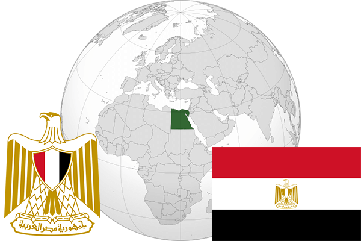

To`liq nomi: Misr Arab Respublikasi
Region: Shimoliy-sharqiy Afrika
Qonunchilik shakli: Respublika
Mustaqillik kuni : 28-fevral 1922 yil (Buyuk Britaniyadan)
Poytaxt: Qohira
Maydoni: 1 001 450 km² (dunyoda 30 -o`rinda )
Chegaradosh davlatlari:Liviya, Isroil, Sudan
Aholisi: 88 487 396 (dunyoda 15 -o`rinda, 2015 -yil roʻyxat)
Aholi zichligi: 85 /km²
Aholining o`rtacha yoshi: 71,6 yil ( 74,2 ayollar, 69,0 erkaklar)
Rasmiy tili: Arab tili
Dini: 90% musulmonlar, 9% xristianlar, 1% boshqa
Pul birligi: Misr funti
Telefon prefiksi: +20
Internet domen: .eg
Xalqaro tashkilotlarga a`zoligi: BMT (1945– yildan), Arab davlatlar uyushmasi (22.03.1945)
Dengiz va okeanlarga chiqishi: Qizil va O`rtayer dengizlari
YIM: Butun: $ 996 mlrd, Jon boshiga: $ 11,5 ming (2015 - yil roʻyxati)
Yirik shaharlari: Qohira, Aleksandriya, Giza